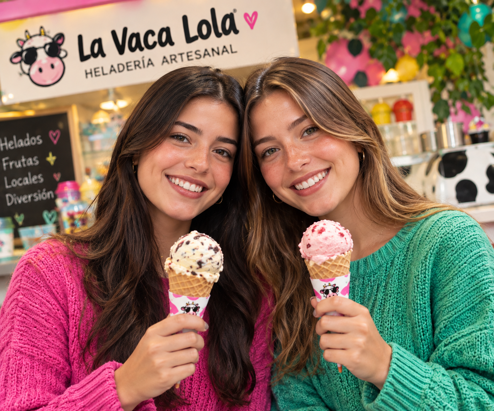

🐮 La Vaca Lola
HELADERÍA ARTESANAL
✦ Helados
con actitud ✦
Nuestra historia
Dos hermanas, una vaca y muchos sabores.
Somos María José y Sofía Galvis. Creamos La Vaca Lola para convertir los sabores de Colombia en helados únicos y divertidos.Nos encanta experimentar y crear combinaciones que sorprendan.
Conoce más sobre nosotras →
María José y Sofía 💖
▶
Nuestros videos
Conoce más de La Vaca Lola en acción. Recetas, procesos y detrás de cámaras.
Preparación artesanal
Frutas locales
La Vaca Lola en acción
¡Pura vida! ✦

Las hermanas detrás del sabor💖
Somos La Vaca Lola
Dos hermanas, muchos sueños y una misma pasión: el helado. Creamos sabores únicos con frutas locales, ingredientes reales y mucho amor por lo que hacemos.
Conoce más sobre nosotras →🐮
📍 Nuestros locales
¡Ven a disfrutar nuestros sabores en Bucaramanga!

📍 Cabecera
Carrera 33 #48-32
Bucaramanga, Santander
◷ Lunes a domingo
12:00 p. m. - 9:00 p. m.

📍 Cacique
Centro Comercial Cacique
Bucaramanga, Santander
◷ Lunes a domingo
12:00 p. m. - 9:00 p. m.
📍 ¡Encuéntranos!
🗺️